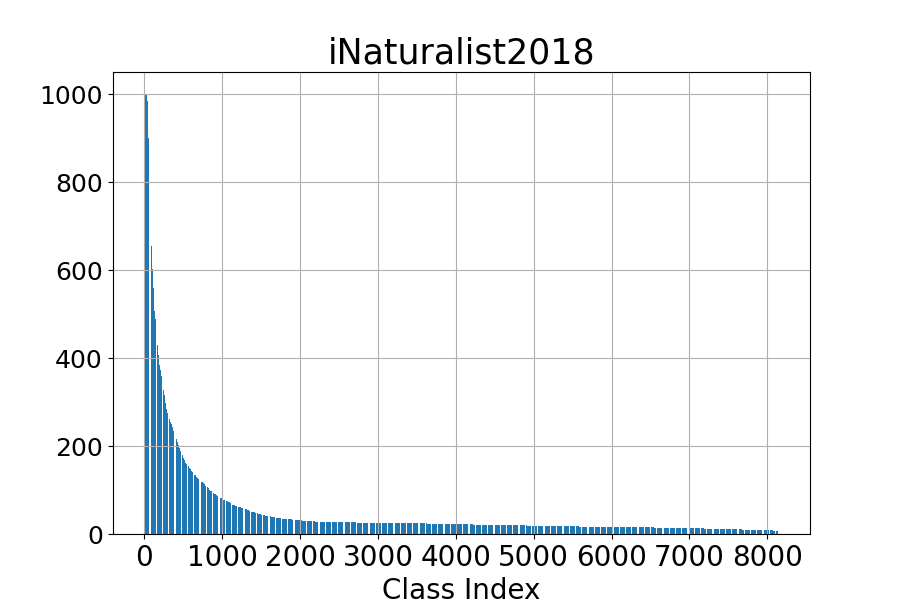
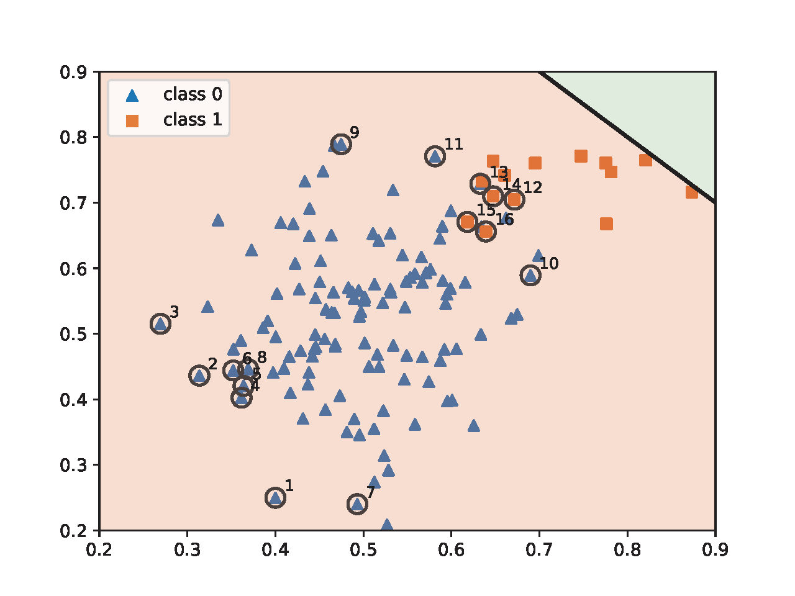
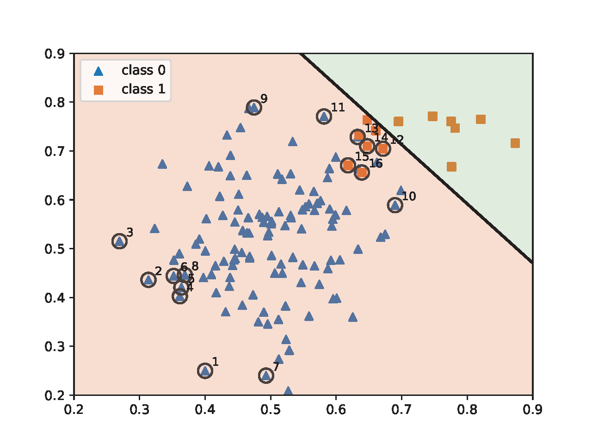
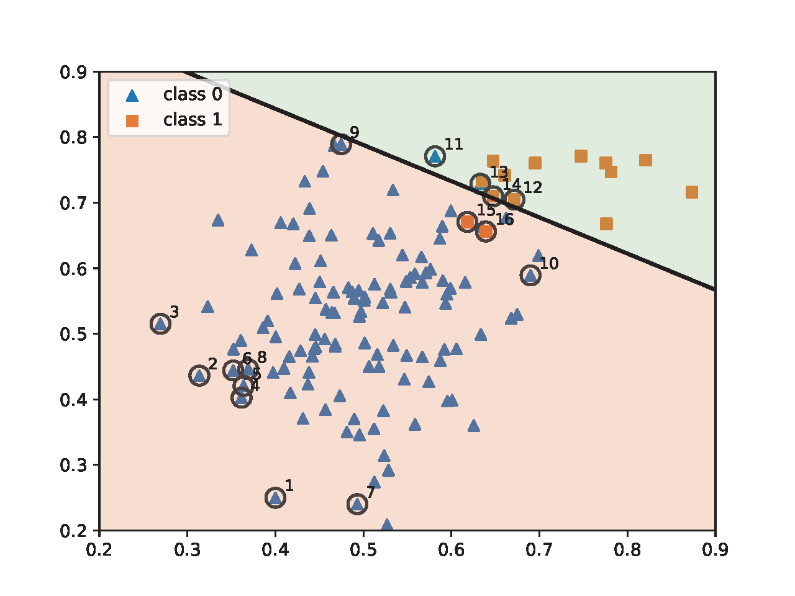
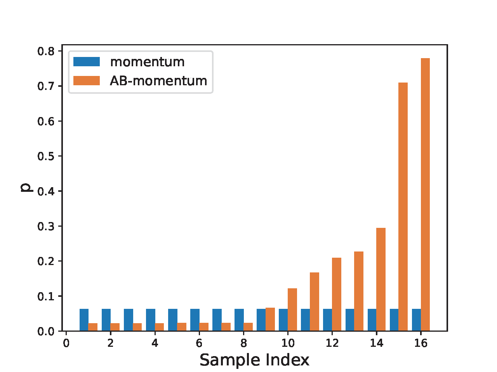
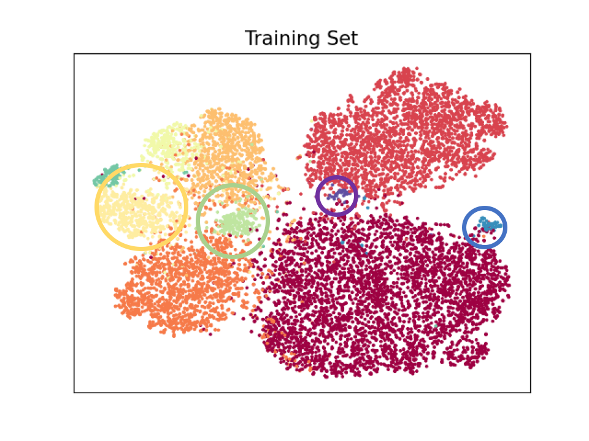
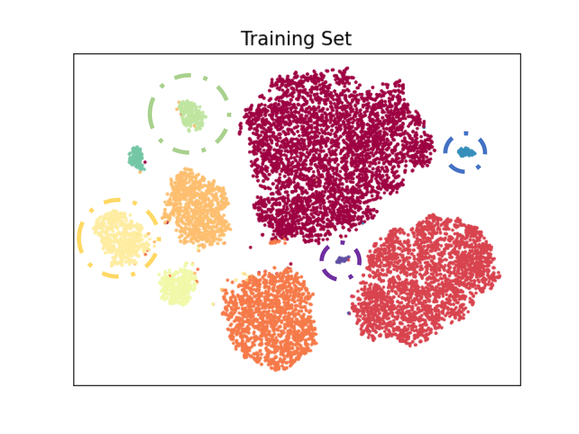
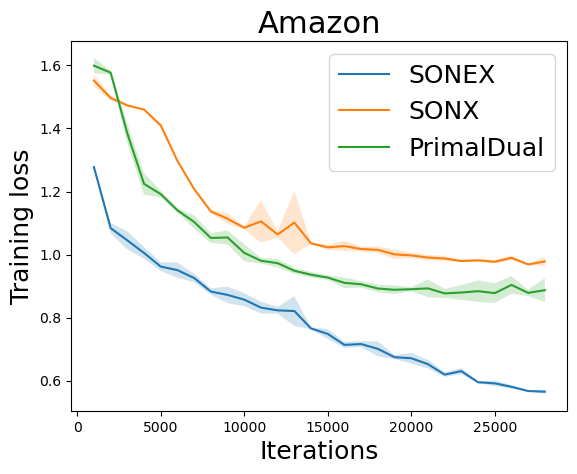

Section 6.2 DRO and Group DRO
Let us consider supervised learning with a set of training data \(\{(\mathbf{x}, y)\}\), where \(\mathbf{x}\in\mathbb{R}^d\) denotes the input data and \(y\in\{1,\ldots, K\}\) denotes the output class label. Let \(\ell(\mathbf{w}; \mathbf{x}, y)\) denote the pointwise loss function, e.g., the cross-entropy loss.
6.2.1 DRO for Imbalanced Classification
Imbalanced classification is prevalent in many areas, including medicine and cybersecurity, where most training data may belong to one or a few classes. Mathematically, it means that the marginal distribution of the class label is a non-uniform distribution. An example of an imbalanced dataset is shown in Figure 6.3.

For imbalanced data, the conventional empirical risk minimization would focus on minimizing the loss of data from those dominating classes, neglecting data from the minority classes. DRO can address this issue by assigning larger weights to data with higher losses. Let us first consider the KL-divergence regularized DRO:
\[\min_{\mathbf{w}}\max_{\mathbf{p}\in\Delta_n}\sum_{i=1}^np_i \ell(\mathbf{w}; \mathbf{x}_i, y_i)- \tau \sum_{i=1}^np_i\log(p_in) + r(\mathbf{w}),\]
where \(r(\mathbf{w})\) is a regularizer on \(\mathbf{w}\). A traditional way to solve this problem is to use stochastic minimax optimization algorithms. However, there are several drawbacks of this approach: (1) the variance of stochastic gradient for \(\mathbf{w}\) depends on the sampling distribution and the best sampling distribution depends on \(\mathbf{p}\); (2) the sampling of data based on \(\mathbf{p}\) incurs additional costs and is not friendly to practical implementation that uses random shuffling; (3) stochastic update of the dual variable \(\mathbf{p}\) either takes \(O(n)\) time complexity per iteration or requires maintaining a special tree structure to reduce the updating time to \(O(\log(n))\).
To circumvent these issues, we consider an alternative formulation that is equivalent to the above minimax objective, i.e.,
\[\begin{align}\label{eqn:dro-a} \min_{\mathbf{w}}\tau\log\left(\frac{1}{n}\sum_{i=1}^n\exp\left(\frac{ \ell(\mathbf{w}; \mathbf{x}_i, y_i)}{\tau}\right)\right) + r(\mathbf{w}). \end{align}\]
For simplicity, we just consider the standard Euclidean norm regularization \(r(\mathbf{w}) = \frac{\lambda}{2}\|\mathbf{w}\|_2^2\). As a result, the first term in the objective takes the form of a compositional optimization problem, namely \(f\!\left(\mathbb{E}_{\zeta}\,[\,g(\mathbf{w}; \zeta)\,]\right)\), where \(f(\cdot)=\tau\log(\cdot)\) and
\[\mathbb{E}_\zeta[g(\mathbf{w}; \zeta)]=\frac{1}{n}\sum_{i=1}^n\exp\left(\frac{ \ell(\mathbf{w}; \mathbf{x}_i, y_i)}{\tau}\right).\]
The SCGD, SCMA, SCST, and SCENT algorithms can be applied to solve the above problem. We now focus on the application of SCMA, whose key steps are presented in Algorithm 24.
The vanilla gradient estimator \(\mathbf{z}_t\) of the first term in (\(\ref{eqn:dro-a}\)) at the \(t\)-th iteration is computed by:
\[\begin{align}\label{eqn:droz} \mathbf{z}_t =\frac{1}{B}\sum\limits_{i\in\mathcal{B}_t} {\color{blue}\frac{\exp(\frac{\ell(\mathbf{w}_t;\mathbf{x}_i, y_i)}{\tau})}{u_{t}}}\nabla \ell(\mathbf{w}_t;\mathbf{x}_i, y_i). \end{align}\]
It is motivated from SCGD where the same mini-batch \(\mathcal{B}_t\) is used for both updating \(u_t\) and computing \(\mathbf{z}_t\).
Let us compare this gradient estimator with that of stochastic optimization for empirical risk minimization:
\[\begin{align}\label{eqn:ermz} \hat{\mathbf{z}}_t = \frac{1}{B}\sum\limits_{i\in\mathcal{B}_t}\nabla \ell(\mathbf{w}_t;\mathbf{x}_i, y_i). \end{align}\]
The difference between (\(\ref{eqn:droz}\)) and (\(\ref{eqn:ermz}\)) lies in the blue term, which acts as a weight for each data in the mini-batch. In the vanilla gradient estimator \(\mathbf{z}_t\) for DRO, the data in the mini-batch with a larger loss \(\ell(\mathbf{w}_t; \mathbf{x}_i, y_i)\) has a higher weight. This will facilitate the learning for data from the minority group. Due to this effect, we also refer to Algorithm 24 as attentional biased stochastic method, named as AB-xx depending on which optimizer is used.
The use of \(u_{t}\) for normalization to compute the weight \(\exp(\ell(\mathbf{w}_t;\mathbf{x}_i, y_i)/\tau)/u_{t}\) is also different from that using the heuristic mini-batch normalization where the weight is computed by \(\frac{\exp(\ell(\mathbf{w}_t;\mathbf{x}_i, y_i)/\tau)}{\sum_{i\in\mathcal{B}_t}\exp(\ell(\mathbf{w}_t;\mathbf{x}_i, y_i)/\tau)}\), which does not ensure convergence if the batch size is not significantly large. Let us consider a simple case such that only one data is sampled for updating. In this case, the mini-batch normalization gives a weight \(1\) for the selected data no matter whether it is from the majority or minority class. However, if the sampled data denoted by \((\mathbf{x}_t, y_t)\) at the \(t\)-th iteration is from a minority group and hence has a large loss, we would like to penalize more on such an example. The estimator \(u_{t}=(1-\gamma)u_{t-1} + \gamma \exp(\ell(\mathbf{w}_t; \mathbf{x}_t, y_t)/\tau)\) is likely to be smaller than \(\exp(\ell(\mathbf{w}_t; \mathbf{x}_t, y_t)/\tau)\) as \(\gamma<1\). As a result, normalization using \(u_{t}\) will give a larger weight to the sampled minority data compared with using the mini-batch normalization, i.e., \(\exp(\ell(\mathbf{w}_t; \mathbf{z}_t)/\tau)/u_{t}> 1\). Qi et al. (2023) empirically demonstrated that using \(\gamma < 1\) outperforms the case \(\gamma = 1\), which corresponds to using the standard mini-batch loss.
Algorithm 24: Attentional Biased Stochastic Methods
- Require: learning rate schedule, \(\gamma\in(0,1)\), \(\tau\), starting point \(\mathbf w_1\)
- for \(t = 1,\cdots, T\) do
- Sample a mini-batch of \(B\) samples \(\mathcal{B}_t\subset[n]\)
- Compute \(g(\mathbf{w}_t, \mathcal{B}_t) = \frac{1}{B}\sum_{i\in\mathcal{B}_t}\exp(\ell(\mathbf{w}_t; \mathbf{x}_i, y_i)/\tau)\)
- Compute \(u_{t} = (1-\gamma)u_{t-1} + \gamma g(\mathbf{w}_t, \mathcal{B}_t)\)
- Compute the vanilla gradient estimator \(\mathbf{z}_t = \frac{1}{B}\sum\limits_{i\in\mathcal{B}_t} \frac{\exp(\frac{\ell(\mathbf{w}_t;\mathbf{x}_i, y_i)}{\tau})}{u_{t}}\nabla \ell(\mathbf{w}_t;\mathbf{x}_i, y_i)\)
- Update \(\mathbf{w}_{t+1}\) by an optimizer such as Momentum or Adam-W
- end for
To illustrate the effect of AB-momentum on imbalanced data, we present an experiment on synthetic data in Figure 6.4, which compares the result of using the Momentum method for ERM and AB-momentum for solving KL-divergence regularized DRO. Figure 6.4(c) shows that AB-momentum learns a better decision boundary than that of the Momentum method for ERM. Figure 6.4(d) shows that data from the minority group that are close to the decision boundary get higher weights during the training.




💡 Practical Tips
We discuss several practical tips for computing \(\mathbf{z}_t\) and other variants of DRO in the context of deep learning.
Backpropagation.
In order to compute the vanilla gradient estimator \(\mathbf{z}_t\) using the PyTorch backward
function, we just need to have a slight change of computing the loss
based on the mini-batch data. Below we give the pseudo code in PyTorch
for computing the gradient estimator highlighted in Step 5 of Algorithm 24. It is worth noting that the line of
p=(exp_loss/u).detach() calculates the weight term and
detaches it from the computational graph so that gradient is not
computed again for it. With the gradient estimator computed by
loss.backward(), then we can use any existing optimizers,
including the Momentum method and AdamW.
sur_loss=surrogate_loss(preds, labels)
exp_loss = torch.exp(sur_loss/tau)
u = (1 - gamma)*u + gamma*(exp_loss.mean())
p = (exp_loss/u).detach()
loss = torch.mean(p * sur_loss)
loss.backward()Avoiding the numerical issue.
However, a numerical issue may arise during the running tied to the computation of \(\exp(\ell(\mathbf{w}_t; \mathbf{x}_i, y_i)/\tau)\), especially when \(\tau\) is small and the loss function of selected data is large so that overflow occurs. As a result, the running of the algorithm may crash due to a NaN error. To address this issue, we maintain \(\nu_t = \log u_t\). Specifically, we denote by \(q_{t,i}=\exp\left(\frac{\ell(\mathbf{w}_t; \mathbf{x}_i, y_i) - \ell_{\max,t}}{\tau}\right)\), where \(\ell_{\max,t}=\max_{i\in\mathcal{B}_t}\ell(\mathbf{w}_t;\mathbf{x}_i, y_i)\). Then Step 4 can be reformulated to:
\[\begin{align*} \exp(\log u_{t}) =& \exp(\log (1 - \gamma) + \log u_{t-1}) \\ & + \exp\left(\log \gamma + \log \bigg(\frac{1}{B}\sum\nolimits_{i\in\mathcal{B}_t} q_{t,i}\bigg) + \frac{\ell_{\max,t}}{\tau}\right). \end{align*}\]
For simplicity, let \(b_{t} = \log (1 - \gamma) + \log u_{t-1}\) and \(q_{t} = \log \gamma + \log\bigg( \frac{1}{B}\sum_{i\in\mathcal{B}_t} q_{t,i}\bigg)+ \frac{\ell_{\max,t}}{\tau}\), we have
\[\exp(\log u_{t}) = \exp(b_{t}) + \exp(q_{t}).\]
The update is equivalent to the following:
\[\begin{align}\label{eq:merge_exp} \exp(\log u_{t}) &= \exp(\max\{b_{t}, q_{t}\})(1 + \exp(-|b_{t} - q_{t}|))\notag\\ &= \exp(\max\{b_{t}, q_{t}\})\sigma^{-1}(|b_{t} - q_{t}|),\notag \end{align}\]
where \(\sigma(\cdot)\) denotes the sigmoid function. Taking the log on both sides gives the update for \(\log u_{t}\). To summarize, we maintain and update \(\nu_{t} = \log u_{t}\) as following:
\[\begin{equation}\label{eqn:ub} \begin{aligned} &b_{t} = \log (1 - \gamma) + \nu_{t-1}\\ &q_{t} = \log \gamma + \log\bigg( \frac{1}{B}\sum\nolimits_{i\in\mathcal{B}_{t}} \exp\bigg(\frac{\ell(\mathbf{w}_t; \mathbf{x}_i, y_i) - \ell_{\max,t}}{\tau}\bigg)\bigg) +\frac{\ell_{\max,t}}{\tau}\\ &\nu_{t} = \max\{b_{t}, q_{t}\} - \log \sigma(|b_{t} - q_{t}|). \end{aligned} \end{equation}\]
At the first iteration \(t=1\), we can just set
\[\nu_{1}=\log \bigg(\frac{1}{B}\sum\nolimits_{i\in\mathcal{B}_{t}} \exp\bigg(\frac{\ell(\mathbf{w}_1; \mathbf{x}_i, y_i)}{\tau} - \frac{\ell_{\max,1}}{\tau}\bigg)\bigg)+ \frac{\ell_{\max,1}}{\tau}.\]
With \(\nu_{t}\), the effective weight \(\frac{\exp(\ell(\mathbf{w}_t;\mathbf{x}_i, y_i)/\tau)}{u_{t}}\) can be computed by
\[\frac{\exp\left(\frac{\ell(\mathbf{w}_t;\mathbf{x}_i, y_i)}{\tau} - \max(\frac{\ell_{\max, t}}{\tau}, \nu_{t})\right) }{\exp\left(\nu_{t} - \max(\frac{\ell_{\max, t}}{\tau}, \nu_{t})\right) }.\]
Thus, all computation involving \(\exp(\cdot)\) will not incur any numerical issue.
The Temperature parameter.
The last point we discuss here is how to set the value of the temperature parameter \(\tau\). A simple way is to treat it as a hyper-parameter and tune it based on cross-validation. However, there is a trade-off in the performance. A deep neural network is a hierarchical learner with lower layers for low-level feature extraction, middle layers for more abstract feature extraction and the last layer for classification. A larger \(\tau\) indicates a more uniform weight, which is not good for learning the last classifier layer and minority class specific features. A smaller \(\tau\) indicates a more non-uniform weight, which is not good for learning class agnostic lower level features.
One approach to mitigate this issue is to use a two-stage approach. In the first stage, we can use a relatively larger temperature \(\tau\) for learning class agnostic lower level features. The second stage, we decrease \(\tau\) to finetune the upper layers for learning robust minority-class specific features and classifier layer. An example is shown in Figure 6.5 on a long-tailed version of the CIFAR10 dataset, where the data is intentionally made imbalanced such that the number of samples per class follows a long-tail distribution, the imbalance ratio \(\rho\) means the ratio between sample sizes of the most frequent and least frequent classes.


Another approach is to treat \(\tau\) as a parameter to be optimized. To achieve this, we can consider optimizing a KL-divergence constrained DRO:
\[\begin{equation*} \begin{aligned} &\min_{\mathbf{w}}\max_{\mathbf{p}\in\Delta_n}\sum_{i=1}^np_i \ell(\mathbf{w}; \mathbf{x}_i, y_i)- \tau_0 \sum_{i=1}^np_i\log(p_in) + r(\mathbf{w}),\\ &\text{s.t.}\quad \sum_{i=1}^np_i\log(p_in)\leq \rho, \end{aligned} \end{equation*}\]
where the regularizer term with a small \(\tau_0\) is added to avoid ill conditioning, making the resulting problem smooth in terms of losses. Using the dual form of the maximization problem (see KL-constrained DRO), the above problem is equivalent to
\[\min_{\mathbf{w}, \tau\geq \tau_0}\tau\log\left(\frac{1}{n}\sum_{i=1}^n\exp\left(\frac{ \ell(\mathbf{w}; \mathbf{x}_i, y_i)}{\tau}\right)\right) + \tau\rho.\]
We can extend Algorithm 24 to optimize the above problem by treating \((\mathbf{w}, \tau)\) as a single variable to be optimized. The vanilla gradient estimator in terms of \(\tau\) at the \(t\)-th iteration is given by:
\[\mathbf{z}_{\tau,t} = \log(u_{t})+ \rho - \frac{1}{B}\sum\limits_{i\in\mathcal{B}_t} \frac{\exp(\frac{\ell(\mathbf{w}_t;\mathbf{x}_i, y_i)}{\tau_t})}{u_{t}}\frac{ \ell(\mathbf{w}_t;\mathbf{x}_i, y_i)}{\tau_t}.\]
6.2.2 GDRO for Addressing Spurious Correlation
Data may exhibit imbalance not in the marginal distribution of class label but some joint distribution of the class label and some attributes. Please see a discussion on the example of classifying waterbird images from landbirds images in Section 2.3. As a consequence, the model may learn spurious correlations between the labels and some attributes. GDRO can be used to mitigate this issue by leveraging prior knowledge of spurious correlations to define groups over the training data.
Algorithm 25: SONEX for solving (\(\ref{eqn:smGDRO}\))
- Require: learning rate schedule, \(\gamma\in(0,1)\), starting points \(\mathbf w_1, \nu_1\)
- for \(t=1,\dotsc, T\) do
- Draw a batch of \(B_1\) groups \(\mathcal{B}_t\subset[K]\)
- for \(i\in \mathcal{B}_t\) do
- Draw \(B_2\) samples \(\zeta^j_{i,t}\sim \mathcal{D}_i, j=1, \ldots, B_2\)
- Update the inner function value estimators by \[u_{i, t} = (1-\gamma) u_{i,t-1} + \gamma\frac{1}{B_2}\sum_{j=1}^{B_2}\ell(\mathbf{w}_t; \mathbf{x}_{i,j}, y_{i,j})\]
- end for
- Set \(u_{i,t+1} = u_{i,t}, i\notin\mathcal{B}_t\)
- Compute the vanilla gradient of \(\nu_t\): \(\mathbf{z}_{t,\nu} = -\frac{1}{B_1}\sum_{i \in \mathcal{B}_{t}} \nabla f_{\varepsilon}(u_{i,t} - \nu_t) + \frac{k}{K}\)
- Compute the vanilla gradient of \(\mathbf{w}_t\): \[\mathbf{z}_{t,\mathbf{w}} = \frac{1}{B_1}\sum_{i \in \mathcal{B}_{t}} \left(\nabla f_{\varepsilon}(u_{i,t} - \nu_t) \frac{1}{B_2}\sum_{j=1}^{B_2}\nabla \ell(\mathbf{w}_t; \mathbf{x}_{i,j}, y_{i,j})\right)\]
- Update \(\nu_{t+1}\) using SGD
- Update \(\mathbf{w}_{t+1}\) using Momentum or AdamW
- end for
Formally, if there is spurious correlation between class label \(y\in\mathcal{Y}\) and some attribute \(a\in\mathcal{A}\), we can group the training data into \(|\mathcal{Y}|\times |\mathcal{A}|\) groups according to the value of \((y, a)\). Let \(\mathcal{D}_i=\{(\mathbf{x}_{i,j}, y_{i,j})\}_{j=1}^{n_i}\) denote the data from the \(i\)-th group for \(i\in\{1,\ldots K\}\). Then we can define the averaged loss for data from each group \(i\) as \(L_i(\mathbf{w})= \frac{1}{n_i}\sum_{j=1}^{n_i}\ell(\mathbf{w}; \mathbf{x}_{i,j}, y_{i,j})\). Then, the GDRO formulation with CVaR divergence corresponding to the top-\(k\) groups is equivalent to (cf. GDRO):
\[\begin{align}\label{eqn:gdro-fcco} \min_{\mathbf{w}, \nu} \frac{1}{K}\sum_{i=1}^K[L_i(\mathbf{w})- \nu]_++ \alpha\nu + \frac{\lambda}{2}\|\mathbf{w}\|_2^2, \end{align}\]
where \(\alpha = \frac{k}{K}\). If we define \(\bar{\mathbf{w}}=(\mathbf{w}, \nu)\) and the inner functions as \(g(\bar{\mathbf{w}}) = L_j(\mathbf{w}) - \nu\) and the outer function as \(f(g)=[g]_+\), then the problem becomes an instance of non-smooth FCCO, where the outer function is non-smooth.
An alternative way is to formulate the problem into an equivalent min-max formulation:
\[\begin{align}\label{eqn:oGDRO} \min_{\mathbf{w}}\max_{\mathbf{p}\in\Delta, np_i\leq 1/\alpha} \sum_{i=1}^Kp_i L_i(\mathbf{w}) + \frac{\lambda}{2}\|\mathbf{w}\|_2^2. \end{align}\]
However, solving this min-max problem has similar drawbacks as discussed in DRO, especially when the number of groups \(K\) is large.

Let us discuss the applicability of algorithms presented in Chapter 4 for solving (\(\ref{eqn:gdro-fcco}\)). The theory of SOX and MSVR requires the smoothness of the outer functions, which is not applicable to GDRO. Both ALEXR and SONX are applicable as their analysis does not require the smoothness of the outer functions. However, their updates are SGD-type, which could make it slow or fail in practice for learning modern deep neural networks such as Transformer.
For deep learning applications, we can leverage SONEX. Its key idea is to smooth the outer hinge function. In particular, we define the smoothed hinge function as \(f_{\varepsilon}(g)\) with a very small \(\varepsilon\) (cf. Example 5.1):
\[\begin{align*} f_{\varepsilon}(g) = \max_{y\in[0,1]} y g - \frac{\varepsilon}{2} y^2 = \left\{\begin{array}{ll}g - \frac{\varepsilon}{2} & \text{if } g\geq \varepsilon\\ \frac{g^2}{2\varepsilon}&\text{ if } 0<g<\varepsilon\\ 0 & \text{o.w.}\end{array}\right.. \end{align*}\]
As a result, we solve the following smoothed problem:
\[\begin{align}\label{eqn:smGDRO} \min_{\mathbf{w}, \nu} \frac{1}{K}\sum_{j=1}^Kf_{\varepsilon}(L_j(\mathbf{w})- \nu) + \alpha\nu + \frac{\lambda}{2}\|\mathbf{w}\|_2^2. \end{align}\]
We present a variant of SONEX in Algorithm 25. Figure 6.6 illustrates the effectiveness of SONEX for solving GDRO compared with SONX and a stochastic primal-dual method.